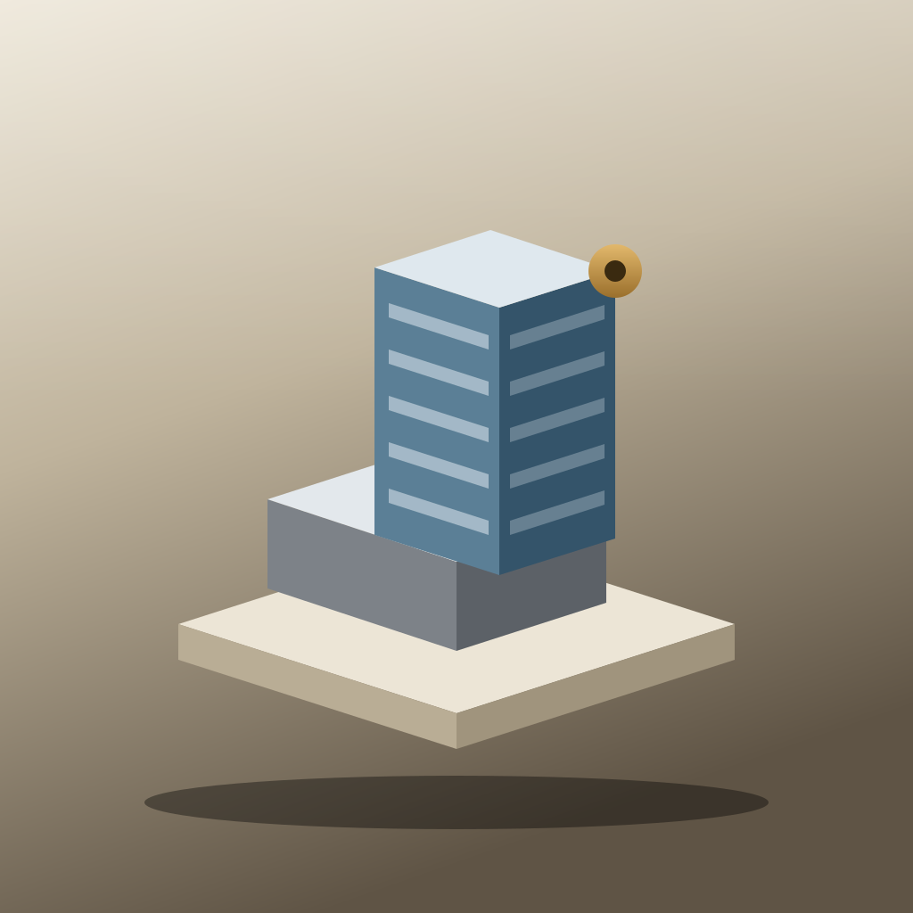
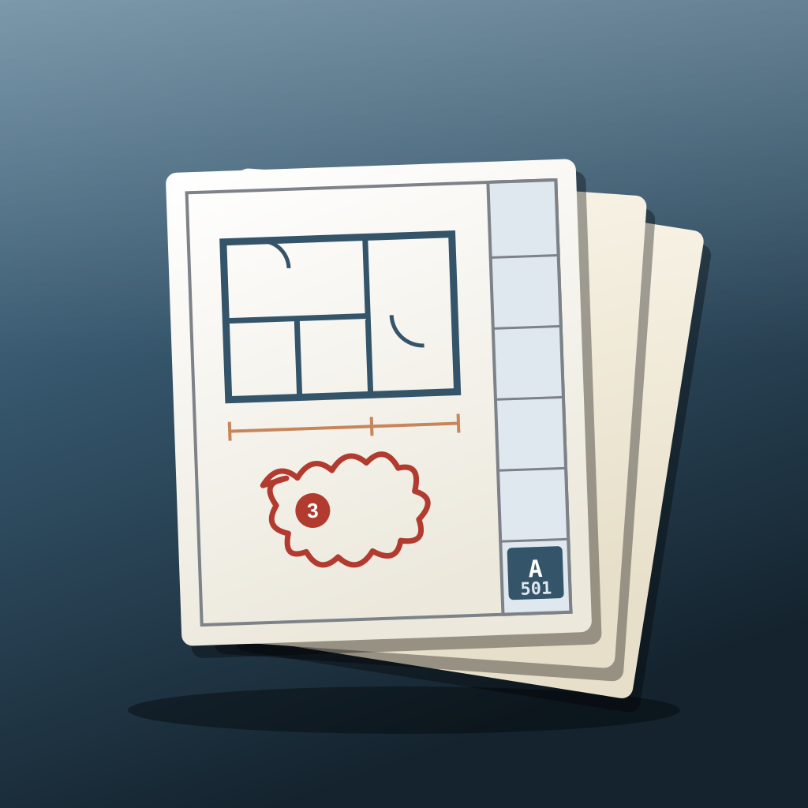
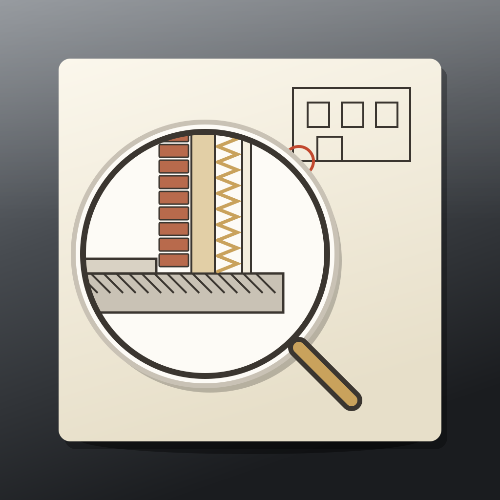
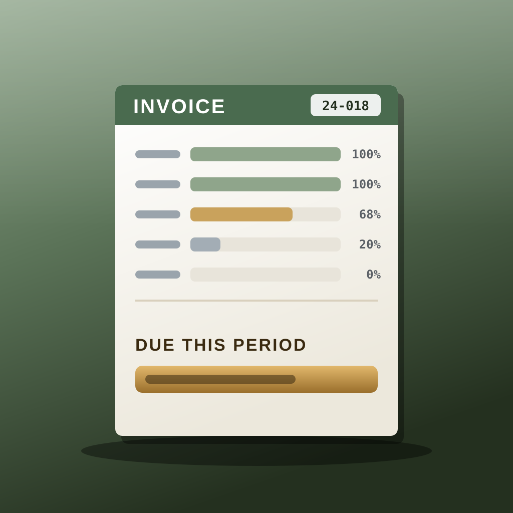

The whole practice, running as one system.
From the first pursuit to the last invoice: fees, the phase-native commission spine, sheet sets and specs, the CA desk, the books and multipliers, and a ten-department agent org doing the routing underneath.
This is the real OS, not a slideshow. It runs in your browser on a sample firm. What you type stays in this tab, nothing is uploaded, and nothing sends, spends or publishes. Anything that would is staged on the Approval Desk.
It follows the job.
Ten rooms in the order a commission actually moves. Tap any one to walk straight in.

CommissionsThe phase-native project spine. Percent-complete and phase profitability fall out of it.
Sheet SetsNCS sheet index, revision history, and the permit-set vs bid-set vs addendum distinction.
Detail StudioStandard details, drawn once. Consultants & AHJC401 scopes and deliverable dates, plus permit comment and resubmittal cycles. CA DeskRFI, submittal, ASI, PR, CCD, CO and field report, with ball-in-court and aging. Time & PayrollTimesheets by project and phase, and the payroll run off those same hours.
BillingPercent-complete invoices, reimbursables at cost+10%, consultant pass-throughs, AR chase. MultipliersUtilization, net multiplier, realization, backlog, AR and WIP, computed rather than reconstructed.The set, on the wall.
Every sheet drawn as the sheet it is, with its title block and a red delta for each revision.
Walk in.
Ten departments inside, each a five-seat chain gated on a confidence bar before anything is released. Nora, the COO, routes and packages; she does not do the work.